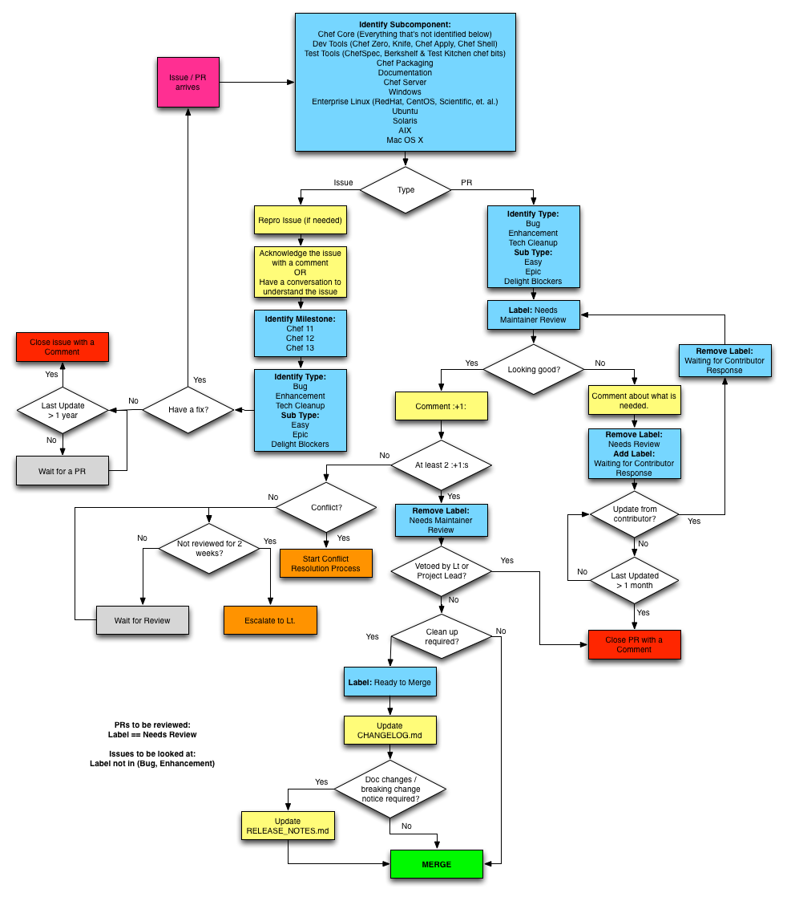

Chef GitHub Issues Workflow
This RFC codifies the workflow Chef uses to track bug reports and contributions using GitHub Issues. The terms and policies used in this workflow are defined by RFC 30.
Terms
In the context of this document below terms are used:
- Chef Users: End users of Chef who participate in this workflow by filing issues.
- Contributors: Users of Chef who would like to improve Chef. They participate in this workflow by submitting contributions to Chef.
- Chef Maintainers: Developers of Chef who are responsible for one or more subcomponents.
- Lieutenants: Developers of Chef who lead the maintenance of a subcomponent.
- Issue: A filed GitHub Issue which can be a bug report, feature request, style change request.
- Contribution: A filed GitHub Pull Request (PR).
- Subcomponents: A sub-area of Chef project which is lead by a Lieutenant and a set of maintainers.
Goals
Everyone can:
- Make contributions in a timely and efficient manner
Chef Users can:
- Be aware of the cause & the next steps for the issues they have filed.
Contributors can:
- Identify the state of their contribution.
Chef Maintainers can:
- See the list of contributions they need to review in a single page.
- See the list of issues they need to investigate in a single page.
Workflow

Notes
Common Steps for Issues & PRs
The first step of Chef GitHub Issues Workflow is to identify the subcomponent for which the issue or PR belongs to. Once the subcomponent is identified, the rest of the workflow is the responsibility of the maintainers of the identified subcomponent.
Issues Workflow
The issues workflow can be broken down into these high level steps:
- Understand the issue and determine the resolution.
- Identify the major version the issue should be fixed in.
- Label the issue to indicate completeness of Triage process.
Any code or contributions associated with the issue will follow the contribution workflow documented below.
Rules
- If an issue is not commented on for more than a year, the issue is retired by closing.
Contribution Workflow
The contribution workflow can be broken down into these high level steps:
- Maintainers check the contribution and give :+1: if the code is looking good, or leave a comment that clearly identifies what is needed for the contribution to move forward.
- At their discretion, the reviewer may choose to complete a contribution by writing tests. This can be a fantastic mentoring opportunity for our community.
- Once at least two maintainers :+1: a PR, the last reviewer should:
- If clean up, such as a Changelog entry or a rebase, is required, mark the PR with the
Ready to Mergelabel. - If no further work is required, merge the PR.
- If clean up, such as a Changelog entry or a rebase, is required, mark the PR with the
- PRs marked with
Ready to Mergewill be merged by maintainers of the subcomponent after including the required documentation updates. Waiting for Contributor Responselabel indicates that an action is needed from the contributor.Needs Maintainer Reviewlabel indicates that an action is needed from Chef maintainers.
Rules
- PRs labeled with
Waiting for Contributor Responseand not updated for more than a month are labelled asIncomplete Contribution. - PRs labeled with
Incomplete Contributionfor 6 months are closed. - PRs labeled with
Needs Maintainer Reviewand not reviewed for 2 weeks escalate to the Lieutenants of the subcomponent. - PRs labeled with
Ready to Mergeand not merged for 2 weeks escalate to the Lieutenants of the subcomponent.
Queries
- List of PRs that need review for a subcomponent:
- Search Query:
is:open is:pr label:"Needs Maintainer Review" label: "subcomponent_name" - TODO Add link to the query
- Search Query:
- List of Issues that need investigation for a subcomponent:
- Search Query:
is:open is:issue label:"subcomponent_name" -label:Bug -label:Enhancement -label:"Tech Cleanup" - TODO Add link to the query
- Search Query:
Copyright
This work is in the public domain. In jurisdictions that do not allow for this, this work is available under CC0. To the extent possible under law, the person who associated CC0 with this work has waived all copyright and related or neighboring rights to this work.